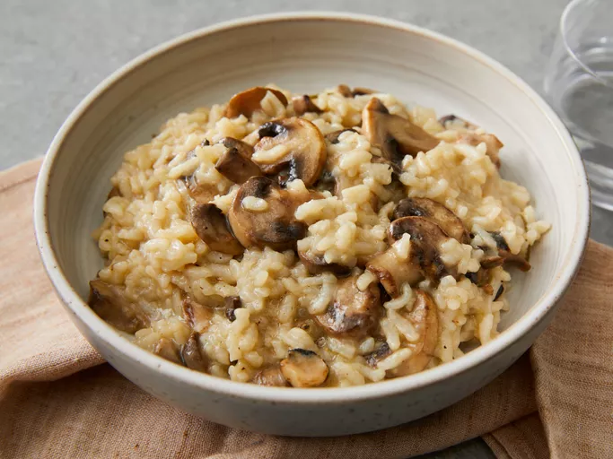

Risotto

Description:
This delicious Instant Pot risotto with tender mushrooms and Parmesan cheese is so simple and fuss-free to make.
It tastes like a fancy dish ordered at an Italian restaurant!
You'll probably start making risotto in your pressure cooker far more often after you try this recipe.
Ingredients:
- Butter and oil
- Vegetables
- Seasonings
- Rice
- White wine
- Stock
- Parmesan
Steps:
- Set your Instant Pot to Sauté, then add the butter and oil.
- Add mushrooms, cook until slightly softened, then stir in onion, and rosemary sprig.
- Stir in the rice, pour in the wine, and simmer. Pour in stock, stirring to scrape the sides.
- Close, lock, and seal the lid. Select high pressure and set the timer for 6 minutes.
- Release the pressure.
- Stir until creamy, remove the rosemary sprig, and stir in the Parmesan.